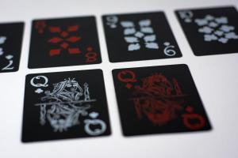
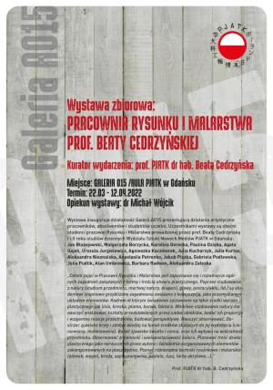

Jesteś grafikiem/informatykiem? Chciałbyś dostać możliwość wyjazdu i reprezentowania uczelni na rożnych wydarzeniach organizowanych w kraju i zagranica? Chciałbyś poszerzyć swoja wiedzę oraz umiejętności praktyczne i teoretyczne, które są cenione na rynku pracy?
Jeśli tak, to kolo naukowe HashCode jest świetnym miejscem dla Ciebie. Właśnie rozpoczynamy rekrutację.
Spotkanie rekrutacyjne odbędzie się w sali 116.
Zapisy do Sekcji Brydża Sportowego

Serdecznie zapraszamy do udziału w Sekcji Brydża Sportowego. Do Sekcji mogą zapisywać się osoby, które już grają w brydża oraz te, które dopiero chcą nauczyć się grać.
Brydż jest grą logiczną, która rozwija nie tylko zdolności analitycznego myślenia ale również działania kooperacyjne. Z tego powodu w wielu szkołach Europy brydż jest takim samym przedmiotem szkolnym jak matematyka czy język obcy. Ta gra jest też po prostu przyjemnym sposobem na spędzenie wolnego czasu i zawarcie nowych znajomości.
Zapisy przeprowadza dr inż. Stanisław Szejko.
Daty i godziny spotkań zostaną dostosowane do planu zajęć zainteresowanych.
Wystawa zbiorowa „Pracownia Rysunku i Malarstwa Prof. Beaty Cedrzyńskiej”

Kurator wydarzenia: prof. PJATK dr hab. Beata Cedrzyńska.
Miejsce: Galeria 015 / Aula PJATK w Gdańsku.
Termin: 22.03–12.04.2022
Opiekun wystawy: dr Michał Wójcik.
Wystawa inauguruje działalność Galerii 015 prezentującą działania artystyczne pracowników, absolwentów i studentów uczelni.
Uczestnikami wystawy są obecni studenci pracowni Rysunku i Malarstwa prowadzonej przez prof. Beatę Cedrzyńską I i II roku studiów dziennych Wydziału Sztuki Nowych Mediów PJATK w Gdańsku: Jan Błażejowski, Małgorzata Borzycka, Karolina Derecka, Paulina Dziąba, Agata Gajek, Urszula Jurgielewicz, Agnieszka Kaczmarek, Julia Kucharzyk, Julia Kortas, Aleksandra Nieznalska, Anastasiia Petrenko, Jakub Piszka, Gabriela Podlewska, Julia Pudlik, Alan Umbrewicz, Barbara Radwan, Aleksandra Załęska
Celem zajęć w Pracowni Rysunku i Malarstwa jest zapoznanie się i rozwinięcie ogólnych zagadnień związanych z formą i treścią utworu plastycznego.
studiowanie z natury (studium przedmiotu, martwej natury, draperii, głowy, postaci/aktu, itd.) są studentowi stopniowo przybliżone zagadnienia związane z kompozycją, jako przemyślanym układem elementów. Kadrem w którym świadomie zestawione są takie środki wyrazu plastycznego jak linia, kreska, plama, barwa, faktura. Wnikliwe studiowanie natury ma nauczyć analizować kształty przedstawionych przez siebie obiektów, badać ich proporcje i wzajemne relacje przestrzenne, budować perspektywę. Nauczyć obserwować. Dostrzec zjawisko bryły i zdobyć wiedzę na temat środków służących do jej wydobycia (cieniowania, modelowania). Badać zjawisko światła i cienia, oraz ich wpływu na widzialność przedmiotu.